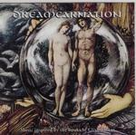

| Artist: | Dreamcarnation |
| Title: | Dreamcarnation |
| Label: | LaBraD'or Records LBD 040010 |
| Length(s): | 55 minutes |
| Year(s) of release: | 2000 |
| Month of review: | [02/2001] |
| 1) | Fugue | 2.47 |
| 2) | Awaken | 3.26 |
| 3) | Broken Dreams | 3.27 |
| 4) | Salesman | 4.55 |
| 5) | The Pact/Incantrix | 3.09 |
| 6) | Incantatrix/The Pact | 2.33 |
| 7) | On The Run | 3.49 |
| 8) | Xenophobia | 3.31 |
| 9) | Nowhere City | 3.20 |
| 10) | Orchard | 3.43 |
| 11) | Between The Blind | 2.26 |
| 12) | The Party | 3.27 |
| 13) | Dreamcarnation | 3.54 |
| 14) | Funeral | 3.28 |
| 15) | Miracle | 3.35 |
| 16) | An Ending | 4.12 |
Broken Dreams is a soft ballad like piece with again dark synths and a combination of low and high well-articulated vocals. In her more powerful moments Jolanda De Vries sounds a bit like Earth And Fire's Jerney Kaagman. The song is again build on strong guitar chords, but has also some jazzy piano work.
Salesman is sung by Stoker and is more in the style of Timelock and Ywis. The music has a certain drivenness and a guitar solo to boot. The next track should be The Pact, but the lyrics in the booklet indicate that this is in fact Incantrix. The song features some Latin grunt vocals, and contrasts nicely with the poppy follow up The Pact.
Karel Messemaker sings on the strong ballad On The Run that has a terrific melody. Many people may find this track to be a bit too slick (maybe the background vocals are not a good idea), but the assistance he gets from Karla is better. And all the while the music is lined with dark guitar lines.
And then it's poppy time again with Xenophobia with poppy vocals, the organ brimming over. The female interlude with the non standard inflection does not really fit that well. A bit too artificial there. Nowhere In City is a weird track, a kind of moody ballad with some weirdly sung parts. These vocals are not really beautiful, but they might not have been meant as such.
Orchard opens slowly with Spanish guitar and depressed vocals and after a not so interesting middle part, the music kinda burst loose in full force for a short while. Between The Blind (although I think this track is actually The Party) is a groovier piece with the horns dueling with the keyboards and percussion as well. The groove unfortunately never really gets funky, the band plays too reservedly for that. Still, a nice try to bring on something new.
What is called The Party on the cd is probably Between The Blind. It is followed by the poppily anthemic title track (but with rhythm guitars) and the intricate vocals of Funeral.
Miracle opens peacefully with tinkling keyboards, but soon the music gets darker overtones. The closer An Ending has some nice violins playing the give the music a sinister side. The rough vocals of Messemaker (slightly Gabrielesque) feature on this track. The closing part with violin is quite subtle and sad.
More attention should be paid to the artwork, because there are at least two non-trivial errors in the order of the songs and such.